Kulcsszavak
Létrehozással kapcsolatos kulcsszavak
| Kulcsszó |
Szerep |
Dokumentáció |
| CREATE DATABASE {név} |
Adatbázis létrehozása. |
[html] |
| SHOW DATABASES |
Az összes adatbázis lekérdezése, ami a szerveren található. |
[html] |
| SELECT DATABASE() |
Aktív adatbázisok lekérdezése. |
[html] |
| DROP DATABASE {név} |
Adatbázis törlése. A törlés végleges. |
[html] |
| USE {név} |
A USE után megadott adatbázisba lépünk, ez lesz az aktív adatbázisunk. |
[html] |
| SHOW TABLES |
Megmutatja az aktuális adatbázisban található összes táblát. |
[html] |
DESC {név} vagy
SHOW COLUMNS FROM {név} |
Egy általunk megadott tábláról kapunk információkat. |
[html] |
| DROP TABLE |
Tábla törlése. A törlés végleges. |
[html] |
| CREATE TABLE |
Tábla létrehozása. |
[html] |
| NULL |
Default beállítás. Az értékét nem ismerjük, nincs meghatározott értéke és nem ekvivalens a nullával. Amennyiben ha rekordot adunk a táblához, és az egyik oszlopához nem rendelünk értéket, akkor automatikusan NULL érték kerül. |
[html] |
| NOT NULL |
A NOT NULL megadásával elkerülhetjük a NULL értékeket. Ha valamihez nem rendelünk értéket, akkor nem NULL érték jelenik meg, hanem az adott adattípusban a 0-val ekvivalens érték. Például VARCHAR-nál üres string, INT-nél 0. |
[html] |
| DEFAULT |
Amennyiben a tábla készítésénél az egyik mezőhöz rendelünk default értéket, akkor a rekord megadásakor, ha valamihez nem írunk adatot, automatikusan a default érték kerül megadásra. |
[html] |
| PRIMARY KEY |
Egy kulcs, amely segítségünkre van abban, hogy egy bizonyos adat csak egyszer szerepeljen egy adott mezőben. Legtöbbször ID-khez rendeljük, mert azok, amik leginkább egyediek. A PRIMARY KEY-t rendelhetjük egy adott mezőhöz vagy a tábla létrehozásakor a legvégén is megadhatjuk, zárójelben, hogy melyik mezőt szeretnénk primary key-nek tekinteni. Csak egy lehet belőle egy táblában. |
[html] |
| AUTO_INCREMENT |
Bizonyos mező értékei minden újabb rekord létrehozásával emelkedik. Ezt is célszerű akkor használni, ha van ID mezőnk és célszerű együtt használni a primary key-el. |
[html] |
| UNIQUE |
Garantálja, hogy az adott mezőben minden érték csak egyszer forduljon elő. Hasonlít a Primary Keyhez, tulajdonképpen a primary key is rendelkezik a unique megszorítással. A különbség a kettő között az, hogy míg Primary Keyből csak 1 lehet táblánként, addig Uniqueból lehet több. |
[html][w3] |
| CHECK |
Egy feltétel, amellyel kontrollálni tudjuk, milyen rekordok kerüljenek be a táblába. |
[html] |
| CONSTRAINT |
A CONSTRAINT kulccszó után tudjuk megadni a megszorításunkat, amelynek nevet is tudunk adni, így ha nem teljesül a feltétel, akkor a hibaüzenetben visszakapjuk, hogy miért nem teljesül. A CONSTRAINT a tábla létrehozásának végén szerepel. |
[html] |
| IF EXISTS |
Annak ellenőrzésére szolgál, hogy egy adatbázis vagy egy tábla létezik-e. Amennyiben nem, úgy azt létrehozza, amennyiben igen, úgy nem történik semmi. Fontos szerepe van, ugyanis amennyiben kihagyjuk, és egy olyan adatbázist vagy táblát szeretnénk létrehozni, ami már létezik, akkor hibaüzenetet kapunk. |
|
Táblák módosítása
| Kulcsszó |
Szerep |
Dokumentáció |
| ALTER TABLE |
Táblákat az ALTER TABLE kulcsszó segítségével tudunk módosítani. Többféle módosítás lehetséges. Például: Oszlop hozzáadása, illetve elhagyása, átnevezés, oszlopok módosítása illetve megszorítások kötése. |
[html] |
| ADD COLUMN |
Oszlop hozzáadása a már meglévő táblához. |
[html] |
| DROP COLUMN |
Oszlop elhagyása a már meglévő táblából. |
[html] |
| RENAME TABLE ... TO ... |
Tábla átnevezése. |
[html] |
| ALTER TABLE ... RENAME TO ... |
Tábla átnevezése. |
[html] |
| RENAME COLUMN ... TO ... |
Oszlop átnevezése. |
[html] |
| MODIFY |
Oszlop típusának megváltoztatása. |
[html] |
| CHANGE |
Oszlop nevének és típusának megváltozatása. |
[html] |
| ADD CONSTRAINT |
Megszorítás hozzáadása. |
[html] |
| DROP CONSTRAINT |
Megszorítás törlése. |
[html] |
CRUD kulcsszavak
| Kulcsszó |
Szerep |
Dokumentáció |
| INSERT INTO {table}({columns}) VALUES ({values}) |
Adatok hozzáadása a táblához. |
[html] |
| SELECT {mezok} FROM {tabla} |
Adatok lekérdezése egy adott táblából. Ha a SELECT után * van, akkor az összes adatot megkapjuk, ha bizonyos mezőnév vagy mezőnevek, akkor az azokhoz a mezőkhöz tartozó adatokat kapjuk vissza. |
[html] |
| WHERE {feltetel} |
Csak azokat az adatokat kapjuk vissza, amikre teljesül a feltétel. |
[html] |
| UPDATE {table} SET {column}={value} (+ feltétel) |
Tábla bizonyos oszlopában található értékek frissítése, amennyiben az általunk megadott feltétel teljesül. Amennyiben nem adunk meg feltételt, úgy az adott oszlopban található összes érték frissülni fog. |
[html] |
| DELETE FROM {table} (+ feltétel) |
Azon rekordok törlése a táblából, amelyekre teljesül a feltétel. Amennyiben nem adunk meg feltételt, úgy az összes rekordot töröljük a táblából, de szemben a DROP TABLE-vel, maga a tábla megmarad, csak üres lesz. |
[html] |
String függvények:
| Kulcsszó |
Szerep |
Dokumentáció |
| CONCAT |
Több mező tartalmának összefűzése. |
[html] |
| CONCAT_WS |
Több mező tartalmának összefűzése a megadott elválasztókarakterrel. |
[html] |
| SUBSTRING (SUBSTR) |
Mező tartalmának levágása. Kétféleképp tudjuk használni: vagy két paramétert adunk meg neki vagy hármat (amiből az egyik a string, amit le akarunk vágni). |
[html] |
| REPLACE |
A szöveg egy részeit kicseréljük másra. |
[html] |
| REVERSE |
A szöveget megfordítjuk. |
[html] |
| CHAR_LENGTH |
A szöveg hosszát kapjuk vissza. |
[html] |
| UPPER |
A szöveget nagybetűsítjük. |
[html] |
| LOWER |
A szöveget kisbetűsítjük. |
[html] |
Finomítással kapcsolatos kulcsszavak:
| Kulcsszó |
Szerep |
Dokumentáció |
| DISTINCT |
Minden duplikált adatból csak egyet kapunk vissza. |
[html] |
| ORDER BY |
Az adatokat rendezzük vele sorba. Az ORDER BY az általunk írt lekérdezés végén áll. A kulcsszó után megadhatunk számot vagy mezőnevet, ami alapján szeretnénk, hogy a sorbarendezés megtörténjen. Amennyiben számot adunk meg, úgy aszerint a mező szerint rendezzük, amelyik azon a helyen áll a SELECT után, ahányadik számot megadtuk. Nem muszáj olyan mező szerint rendezni, amit lekérdezünk. Ha a szám vagy a mező után az ASC szót írjuk, akkor növekvő, ha a DESC szót írjuk, akkor csökkenő sorrendbe rendezünk. A default beállítás a növekvő, így az ASC-ot nem is szükséges kiírni. |
[html] |
| LIMIT |
Leszűkítjük a lekérdezés során kapott adatok számát. Ezt is kétféleképpen tudjuk megadni: vagy egy számot adunk meg és akkor a legelső X találatot kapjuk vissza, vagy két számot (vesszővel elválasztva) és akkor eltolva kapunk vissza X találatot. |
[html] |
Csoportosítással kapcsolatos kulcsszavak
| Kulcsszó |
Szerep |
Dokumentáció |
| GROUP BY |
Bizonyos mezőben található adatok csoportosítása az értékük alapján. |
[html] |
| COUNT() |
Adatok megszámolása. Ha a GROUP BY-jal használjuk együtt, akkor megszámoljuk, hogy egy csoporthoz mennyi adat tartozik. |
[html] |
| MIN() |
A minimális értéket határozhatjuk meg vele. Ha a minimális érték mellé szeretnénk valamit kiíratni, akkor subqueryt kell használni, máskülönben pontatlan eredményt kapunk. GROUP BY-jal használva a csoport egy minimális értékét tudjuk meghatározni vele (például ha könyvek vannak, akkor a különböző írók legkorábbi könyvét). |
[html] |
| MAX() |
A maximális értéket határozhatjuk meg vele. Ha a maximális érték mellé szeretnénk valamit kiíratni, akkor subqueryt kell használni, máskülönben pontatlan eredményt kapunk. GROUP BY-jal használva a csoport egy maximális értékét tudjuk meghatározni vele (például ha könyvek vannak, akkor a különböző írók legkésőbbi könyvét). |
[html] |
| SUBQUERIES |
Amikor egy lekérdezésen belül szerepel egy másik lekérdezés, általában a feltételben. Minden esetben a belső lekérdezés hajtódik végre, az eredmény pedig egy tábla lesz még akkor is, ha csak 1 értéket kapunk meg. Viszont nem mindig ez a legjobb módszer, hisz ha egy nagy adathalmazzal rendelkező táblára több lekérdezést hajtunk végre, az rengeteg idő és memória. Így csak akkor használjuk, ha nincs más megoldás a feladat elvégzésére. |
[html] |
| SUM() |
Bizonyos mezőkben található számokat tudunk vele összegezni. |
[html] |
| AVG() |
Bizonyos mezőkben található számokat tudunk vele átlagolni. |
[html] |
| ROUND(x,y) |
Számok kerekítésére szolgál. |
[html][w3] |
Adattípusok
| Kulcsszó |
Szerep |
Dokumentáció |
| CHAR(x) |
Karaktertípus, fix memóriafelhasználással. A karakterek hosszának 0 és 255 közötti értéket tudunk megadni. |
[html][mysql] |
| VARCHAR(x) |
Karaktertípus, dinamikusan változó memóriafelhasználással. A karakterek hosszának 0 és 255 közötti értéket tudunk megadni. |
[html][mysql] |
| INT |
Egész számok tárolására használjuk. |
[html] |
| DECIMAL(x,y) |
Tizedestörteket tudunk megadni vele. Két paramétert kell megadni: az egyikkel azt tudjuk megadni, hogy összesen hány számjegyből fog állni a szám, a másodikkal, hogy a tizedesvessző után hány számjegy fog állni. Minden esetben az x nagyobb, mint az y. Ha túl sok számjegyből álló számot adunk meg, akkor a lehető legnagyobb szám fog a táblába kerülni. |
[html] |
| FLOAT |
Tizedestörteket tudunk megadni vele, 7 számjegyig pontos. Kisebb a memóriaigénye, mint a DOUBLE-nek, viszont kevésbé pontos. |
[html] |
| DOUBLE |
Tizedestörteket tudunk megadni vele, 15 számjegyig pontos. Nagyobb a memóriaigénye, mint a FLOAT-nak, viszont pontosabb. |
[html] |
| DATE |
Csak dátumot tároló adattípus. Formátuma: 'YYYY-MM-DD' |
[html] |
| TIME |
Csak időt tároló adattípus. Formátuma: 'HH:MM:SS'. |
[html] |
| DATETIME |
Dátumot és időt tároló adattípus. Formátuma: 'YYYY-MM-DD HH:MM:SS'. Nagyobb a memóriaigénye, mint a TIMESTAMP-nek, viszont nagyobb dátumtartományt képes felismerni és tárolni. |
[html][mysql] |
| TIMESTAMP |
Dátumot és időt tároló adattípus. Formátuma: 'YYYY-MM-DD HH:MM:SS'. Kisebb a memóriaigénye, mint a DATETIME-nak, viszont kisebb dátumtartományt képes felismerni és tárolni. Célszerű akkor használni, amikor olyan dátumot tárolunk, ami a közeljövőben volt vagy lesz. |
[html][mysql] |
Adattípusokhoz kapcsolódó kulcsszavak
| Kulcsszó |
Szerep |
Dokumentáció |
| CURDATE() |
A jelenlegi dátumot adja vissza. Le tudjuk kérdezni a SELECT-tel. |
[html] |
| CURTIME() |
A pontos időt adja vissza. Le tudjuk kérdezni a SELECT-tel. |
[html] |
| NOW() |
A jelenlegi dátumot adja vissza a pontos idővel. Le tudjuk kérdezni a SELECT-tel. |
[html] |
| DAY() |
A dátumban szereplő nap. |
[html] |
| DAYNAME() |
Az adott nap neve. |
[html] |
| DAYOFWEEK() |
Az adott nap hányadik a héten. Vasárnap az 1.! |
[html] |
| DAYOFYEAR() |
Az adott nap hányadik az évben. |
[html] |
| MONTH() |
A hónap sorszámát adja vissza. |
[html] |
| MONTHNAME() |
A hónap nevét adja vissza. |
[html] |
| YEAR() |
Az adott évet adja vissza. |
[html] |
| HOUR() |
Az órát adja vissza. |
[html] |
| MINUTE() |
A percet adja vissza. |
[html] |
| SECOND() |
A másodpercet adja vissza. |
[html] |
| DATE_FORMAT() |
Dátum egyedi formázására használható. Két paramétert kell neki megadni: a dátumot és a formátumot, hogy miképp szeretnénk a dátumot visszakapni. |
[html][mysql] |
| DATEDIFF() |
Két dátum különbségét tudjuk vele kiszámolni. Két paramétert vár: a két dátumot, amelynek a különbségét meg szeretnénk kapni. |
[html] |
| DATE_ADD() |
Dátumhoz tudunk hozzáadni tetszőlegesen bármit, ami dátumhoz köthető. Például másodpercet vagy napokat. |
[html][w3] |
| CAST() |
Egy valamilyen típusú adatot másik típusú adattá tudunk konvertálni |
[html][w3] |
Logikai operátorok
| Kulcsszó |
Szerep |
Dokumentáció |
| =, != |
Egyenlő/nem egyenlő |
[html] |
| LIKE, NOT LIKE |
Adatok illeszkedése vagy nem illeszkedése egy általunk megadott patternre |
[html-op][html-fin] |
| >, >= |
Nagyobb, nagyobb vagy egyenlő |
[html] |
| <, <= |
Kisebb, kisebb vagy egyenlő |
[html] |
| AND, OR |
Logikai és, logikai vagy. Jelölésük még: && és || |
[html] |
| BETWEEN, NOT BETWEEN |
Egy adott érték két másik érték között van-e vagy sem. |
[html] |
| IN, NOT IN |
Egy adott érték benne van-e egy halmazban vagy sem. |
[html] |
| MOD |
Maradékos osztás. Jelölés még: %. |
[html] |
| DIV |
Egészosztás. Jelölés még: /. |
[html] |
| IS NULL, IS NOT NULL |
Logikai vizsgálat, hogy egy adat NULL-e vagy sem. |
[html] |
Elágazás
| Kulcsszó |
Szerep |
Dokumentáció |
| CASE |
Ezzel jelöljük az elágazás kezdetét. |
[html] |
| WHEN |
A feltételünket tudjuk megadni vele. A feltételek sorrendje nagyon fontos, hisz mindig a legkorábbi feltétel teljesül, ha van olyan feltétel, amire megfelel az adat. |
[html] |
| THEN |
Ha teljesül a feltétel, akkor mit kapjunk vissza. Ez egy sorban van a WHEN-nel. |
[html] |
| ELSE |
Amennyiben egyik feltétel sem teljesül, akkor mit kapjunk vissza. |
[html] |
| END (AS) |
Az elágazás lezárása és az elágazás során kapott ideiglenes oszlop nevének meghatározása. |
[html] |
| IF |
Feltételeket tudunk megadni és a feltétel teljesülése illetve nem teljesülése esetén tudunk bizonyos outputot meghatározni. Három paramétert vár: egy feltételt, egy értéket, amit akkor kapunk, ha igaz a feltétel, illetve egy értéket, amit akkor kapunk, ha nem teljesül az. |
[w3] |
| IFNULL(feltetel, ertek) |
A NULL értékkel rendelkező adatnak tudunk értéket adni. |
[w3] |
Joinok
| Kulcsszó |
Szerep |
Dokumentáció |
| FOREIGN KEY, REFERENCES |
Foreign Key-jel két táblát tudunk összekötni úgy, hogy a kapcsolat megmaradjon. Ha táblát törlünk, akkor mindig a Foreign Key-es táblával kezdünk. |
[html] |
| INNER JOIN (JOIN) |
Az A és a B tábla azon rekordjai szerepelnek az összekapcsolt táblában, amelynek kulcsai az A és a B táblában is szerepelnek. Ez az egyetlen join, ahol nem lesz null érték (hacsak nem adtunk meg az egyik táblában null értéket). |
[html] |
| LEFT JOIN |
Amennyiben az A tábla kulcsa közül valamelyik szerepel a B tábla kulcsai között, úgy a B tábla adott rekordját hozzájoinoljuk a táblához. Az A tábla összes rekordja mindenképp bekerül a joinolt táblában, míg a B tábla azon rekordjait, amivel nem tudtunk matchelni, elhagyjuk. Lehet benne Null, amit az IFNULL() függvénnyel tudunk "feloldani". |
[html] |
| RIGHT JOIN |
Amennyiben a B tábla kulcsa közül valamelyik szerepel az A tábla kulcsai között, úgy az A tábla adott rekordját hozzájoinoljuk a táblához. A B tábla összes rekordja mindenképp bekerül a joinolt táblában, míg az A tábla azon rekordjait, amivel nem tudtunk matchelni, elhagyjuk. Lehet benne Null, amit az IFNULL() függvénnyel tudunk "feloldani". |
[html] |
| OUTER JOIN |
Az A és a B tábla összes rekordjai szerepelnek az összekapcsolt táblában, amelynek kulcsai az A vagy a B táblában szerepelnek. Azoknál a rekordoknál, amelyek eltérnek, null érték(ek) keletkeznek. |
[html] |
| ON DELETE CASCADE |
Ezt a FOREIGN KEY-nél tudjuk megadni és a célja az, hogyha egy rekordot törlünk a szülő táblában, akkor a gyerek táblában az összes hozzá tartozó rekordot töröljük, ugyanis azokra a rekordokra így már nem lesz szükségünk. |
[html] |
Nézetek, módok
| Kulcsszó |
Szerep |
Dokumentáció |
| CREATE VIEW ... AS ... |
Ezzel utasítással el tudjuk menteni az általunk megadott lekérdezés után kapott táblát. Ennek célja az, hogy bizonyos esetekben nem kell mégegyszer a lekérdezést megírni, hanem, mivel az elmentett tábla is normális táblaként funkcionál, könnyen hozzá tudunk férni az adott táblához és ugyanúgy tudunk lekérdezéseket is írni vele. |
[html][mysql] |
| CREATE OR REPLACE VIEW ... AS ... |
Ha esetleg módosítani szeretnénk a táblán, például rossz sorrendben rendeztük, akkor használjuk ezt az utasítást. |
[html][mysql] |
| ALTER VIEW |
Ugyanaz, mint az előző. |
[html][mysql] |
| HAVING |
A HAVING segítségével a csoportosított adatainkat tudjuk szűrni. A HAVING után tudjuk alkalmazni az összegző függvényeket. |
[html] |
| WITH ROLLUP |
A WITH ROLLUP kulcsszó a GROUP BY-jal áll együtt és ennek segítségével a lekérdezés során kapott táblázat utolsó sorában megjelenik egy összegző sor. Működik akkor is, ha több mezőt csoportosítunk, ekkor több összegző sor jelenik meg a legkérdezésben. |
[html] |
Ablakfüggvények
| Kulcsszó |
Szerep |
Dokumentáció |
| OVER() |
Az OVER() függvény meghívásával tudjuk megvalósítani azt, hogy minden egyes sornál megjelenjen az összesítő függvény által számolt érték. Ha a zárójelek közé nem írunk semmit, akkor minden sornál ugyanaz az érték jelenik meg. |
[html][mysql] |
| PARTITION BY |
|
[html][mysql] |
| ORDER BY |
AZ OVER() függvényt kell hozzá meghívni és a zárójel pár közé kell írni ezt a kulcsszót. A szerepe hasonlít a GROUP BY-éhoz, különböző sorokat tudunk csoportosítani az adott mezőben található értékeik szerint. |
[html][mysql] |
| RANK() |
A RANK() egy tényleges ablakfüggvény, amelynek segítségével rangsorolni tudjuk az adatainkat. Az OVER()-ben meg kell adni azt, hogy mi szerint szeretnénk rangsorolni. Fontos, hogy számít az, hogyha az adott értékek egyenlőek, ilyenkor ugyanolyan sorszámmal látja el az azonos értékkel rendelkező sorokat. |
[html][mysql] |
| ROW_NUMBER() |
A sorokat sorszámozza, nem törődik azzal, ha több adat is megegyezik egymással. |
[html][mysql] |
| DENSE_RANK() |
Hasonlít a RANK()-hez, annyi a különbség, hogy folyamatosan sorszámoz az egyenlőséget figyelembe véve. |
[html][mysql] |
| NTILE(N) |
Az adatokat N részre osztjuk bizonyos értékek szerint és azt kapjuk vissza minden sornál, hogy melyik részhez tartozik az adott adat az adott érték szerint. |
[html][mysql] |
| FIRST_VALUE() |
Az első érték. |
[html][mysql] |
| NTH_VALUE() |
Valahányadik érték. |
[html][mysql] |
| LAG() |
Összehasonlítás az előző sor értékével. |
[html][mysql] |
| LEAD() |
Összehasonlítás a következő sor értékével. |
[html][mysql] |
A kezdetek
SELECT * - minden rekord kiválasztása
SELECT * FROM customers - minden rekord kiválasztása a customers adatbázisból
ORDER BY Price DESC - Price szerint csökkenő sorrendbe (DESC) rendezzük az adatbázis rekordjait
A kulcsszavak sorrendje:
- SELECT
- FROM
- WHERE
- GROUP BY
- HAVING
- ORDER BY
Adatbázisok, SQL, MySQL
Database management system (DBMS) - különböző szoftverek, amik segítségével adatbázisokat tudunk kezelni!
database - a structured set of computerized data with an accessible interface
SQL - structured query languages
Az SQL-lel az adatbázissal kommunikálunk, míg a MySQL segítségével tudjuk az adatbázist változtatni
Táblázatok
A táblázatok tetejét fejlécnek (header) nevezzük, ezekkel tudjuk megadni, hogy az adott oszlopban milyen adatok találhatóak meg (név, kor, nem stb.)
Minden sorhoz 1-1 adat tartozik.
Az adatbázisok táblázatok sokaságából áll.
Rengeteg adattípus létezik, ezek közül kettő legfontosabb: INT (Numeric), VARCHAR (String)
INT: Egész szám.
VARCHAR: Különböző hosszúságú stringeket tudunk megadni, a hossza 1 és 255 között lehet. Zárójelben meg kell adni a maximum karakterhosszúságot. Pl.: varchar(100)
Táblázat készítése és alapkulcsszavak
Először adatbázist kell létrehozni (ha még nincs), a CREATE DATABASE kulcsszó segítségével (az adatbázis neve nem állhat több szóból, ha több szót szeretnénk neki adni, használjuk a "snake_caset" vagy a "camelCaset").
Utána a USE kulcsszó megadása után meg kell adni azt az adatbázist, amiben dolgozni szeretnénk.
Ezek után lehet CREATE TABLE segítségével táblát létrehozni, ahol meg kell adni a tábla nevét és az összes mezőt a tulajdonságaikkal, ezeket vesszővel elválasztva.
Az összes adatbázist a SHOW DATABASES-zel tudjuk lekérdezni. Az aktív adatbázisokat a SELECT DATABASE()-szel tudjuk lekérdezni, míg az adatbázisban található táblázatokat a SHOW TABLES kulcsszóval tudjuk lekérdezni.
Egy adott tábla adataihoz a DESC kulcsszót kell használni.
A SELECT DATABASE() kivételével minden kulcsszó után egy specifikus adatbázis/tábla nevet meg kell adni!
DROP DATABASE/TABLE kulcsszavakkal adatbázist és táblázatot tudunk törölni, de vigyázni kell ezzel, mert a törlés végleges!
Táblázatba értéket az INSERT INTO kulcsszóval tudunk beilleszteni. Ezután meg kell adni a táblázat nevét és a mezőket, ahová adatot adunk meg, majd a VALUES kulcsszó után zárójelben, a megfelelő sorrendben és vesszővel elválasztva akár több adatot is meg tudunk adni.
NOT vs NOT NULL, default érték
NULL - Az értékét nem ismerjük, nincs meghatározott értéke és nem ekvivalens a nullával.
1. eset: NULL és nincs default érték
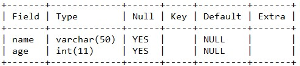
Ha valaminek nem adunk értéket a táblázatba hozzáadásnál, akkor az default NULL értéket kap.
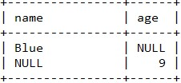
2. eset: NOT NULL és nincs default érték
A NOT NULL megadásával elkerülhetjük a NULL értékeket.
NOT NULL megadásához a táblázat készítésekor meg kell adni az adattípus után, hogy NOT NULL.
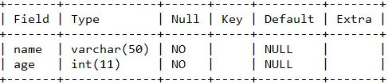
Amennyiben megadjuk a NOT NULL-t és valamihez nem rendelünk értéket, akkor az INT helyére 0 kerül, míg a VARCHAR helyére üres string.
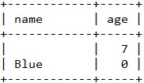
Ezt kikerülve meg kell adnunk egy default értéket.
3. eset: NULL és van default érték
Default értéket úgy tudunk megadni, hogy az adattípus megadása után a DEFAULT kulcsszó után megadunk egy értéket (pl. DEFAULT 'unnamed').
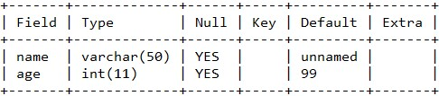
Ha valamihez nem rendelünk értéket, akkor automatikusan a default érték kerül megadásra.
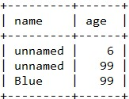
4. eset: NOT NULL és van default érték
Nagyon hasonlít a 3. esethez, DE a 3. esetben tudunk manuálisan NULL értéket adni. Ha megadjuk, hogy NOT NULL a táblázat készítésénél, akkor egy NULL érték megadásánál errort kapunk.
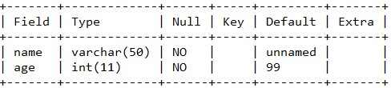
És ha NULL értéket szeretnénk beilleszteni a táblázatban, ezt kapjuk:
ERROR 1048 (23000): Column 'age' cannot be null
Összességében a lényeg: Ha egy adat megadása kötelező, akkor NOT NULL, ha nem kötelező, akkor NULL
Idézőjelek: Ha a szövegben ' található, akkor hibát kaphatunk. Ilyenkor a szövegünket vagy "" közé írjuk, vagy használjuk a \'-t.
Kulcsok - Primary Keys
Előfordulhat az az eset, hogy több adathoz pontosan ugyanazokat a tulajdonságokat adjuk meg, például:
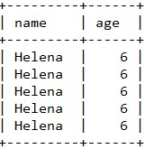
Ez miért probléma? Alapvetően a fő cél az, hogy minden egyes adat az adatbázisban (és a táblákban) egyedi legyen, kerülni kell az azonos adatokat. Nincs arra lehetőség, hogy ezeket az adatokat elszeparáljuk és különbözőként tekintsünk rájuk.
Ezt a problémát úgy tudjuk kiküszöbölni, hogy minden egyes adatot egy egyedi ID-val látunk el.
Primary key - a unique identifier
Kulcsot úgy tudunk megadni, ha a táblázat készítésénél a PRIMARY KEY után zárójelben megadjuk, hogy melyik mező viselkedjen kulcsként. Vagy az adott mező végére írjuk oda, hogy PRIMARY KEY.
Ezután pedig minden egyes új adat bevitelekor az adatok mellé egy ID-t is meg tudunk adni, amiket nem tudunk duplikálni, mert errort kapunk.

Amennyiben azt szeretnénk, hogy ez az ID folyamatosan növekedjen, a táblázat megadásakor meg kell adni az AUTO_INCREMENT-et is.
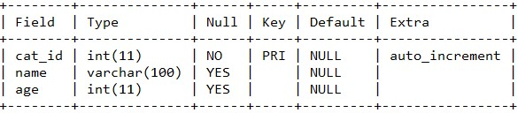
CRUD
A négy legfontosabb művelet:
- Create - INSERT INTO
- Read - Adatok kiolvasása
- Update - Adatok frissítése
- Delete - Adatok törlése
Read
Hogyan tudjuk megkapni és megkeresni az adatokat?
*-gal az összes oszlopot visszakapjuk (vagyis a teljes táblát)
Ha csak bizonyos oszlopokat szeretnénk kiíratni, akkor a SELECT kulcsszó után a megfelelő oszlopneveket kell megadni vesszővel elválasztva (pl SELECT name, age). Az oszlopok sorrendje is az lesz, ahogy megadtuk őket a SELECT után.
Ált.:
SELECT {mezok}
FROM {tabla};
Például:
SELECT name, age
FROM cats;
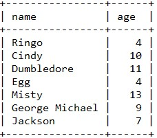
A WHERE kulcsszóval bizonyos feltételeket tudunk adni, amelyekkel tudjuk szűkíteni a visszaadandó adatok méretét, ezáltal sokkal specifikusabban tudjuk megadni a lekérdezést. A nagybetű/kisbetű nem számít.
Ált.:
SELECT {mezok}
FROM {tabla}
WHERE {feltetel};
Például:
SELECT *
FROM cats
WHERE age >= 5;
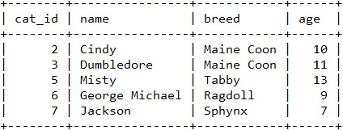
Példa egy összetettebb lekérdezésre:
SELECT name
FROM cats
WHERE age >= 5 AND breed = 'Maine Coon';
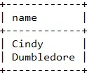
ALIAS - AS kulcsszó, ezzel meg tudjuk adni, hogy az adott mező milyen néven jelenjen meg. Ez azért is nagyon fontos, mert ha több táblát kapcsolunk össze, amelyek ugyanazokkal a mezőnevekkel rendelkeznek (pl name), akkor abból kavarodás lehet. A több szóból álló aliast idézőjelek közé kell tenni.
Ált.:
SELECT {mezo} AS {mezo_alias}, ...
FROM {tabla};
Például:
SELECT cat_id AS id, name
FROM cats
WHERE age > 3;
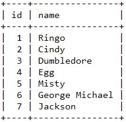
És ahogy látható, a cat_id-ből id lett.
Update
Az adatok felülírása
UPDATE kulcsszó után meg kell adni a tábla nevét, majd egy SET kulcsszó után, hogy melyik mezőben szeretnénk módosítani és milyen értékre. Ezután a WHERE kulcsszóval meg kell adni a feltételt és az összes feltételt teljesítő rekordra módosítjuk a SET után megadott mezőt arra az értékre.
Érdemes az update előbb SELECT-tel kiválasztani a megváltozandó adatot vagy adatokat, hogyha esetleg rosszul updateltünk, akkor lássuk a hibát.
Ált.:
UPDATE {tabla}
SET {modositas}
WHERE {feltetel};
Például:
UPDATE cats
SET breed='Shorthair'
WHERE breed='Tabby';
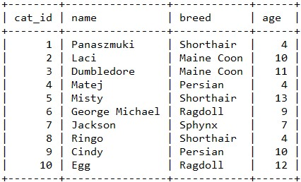
Ahogy látható, a Tabbyből Shorthair lett.
Delete
Adatok törlése.
DELETE kulcsszó után FROM kulcsszó, amit a táblanév követ, majd a WHERE kulcsszó után meg kell adni a feltételt, ami alapján adatot szeretnénk törölni. Törlés előtt célszerű SELECT-tel lekérdezni a törölni kívánt adatot, mert a törlést nem tudjuk visszavonni.
Ált.: DELETE FROM {tabla} WHERE {feltetel};
A feltétel nélküli DELETE az összes adatot kitörli a táblázatból. Van különbség eközött és a DROP TABLE között, ugyanis az előbbi az adatokat törli (de a táblázat megmarad), míg utóbbi a teljes táblát.
DELETE FROM cats WHERE age=4;
DELETE FROM cats WHERE cat_id=age;
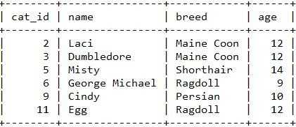
SQL programok írása
SQL programok kiterjesztése: .sql
ls-sel meg kell nézni, hogy látjuk-e az adott könyvtárban az .sql filet. Ha igen, akkor jó helyen járunk.
Terminalban a source + fájlnév megadása után tudunk SQL-t futtatni.
MySQL függvények
MySQL string függvények
Főbb függvények:
- CONCAT
- SUBSTRING
- REPLACE
- REVERSE
- CHAR_LENGTH
- UPPER
- LOWER
Ezeket a függvényeket csak SELECT-tel tudjuk alkalmazni, mert error-t kapunk.
CONCAT
Több szöveget egy szöveggé alakítunk
Ált.: CONCAT(x,y,z,...)
Ált.: CONCAT(column1, 'text', column2, 'text', ...)
A CONCAT függvényt a SELECT kulcsszó után tudjuk használni és ha mezőket szeretnénk összefűzni, akkor meg kell adni a tábla nevét is.
SELECT CONCAT(author_fname, ' ', author_lname)
FROM books
WHERE pages > 400;
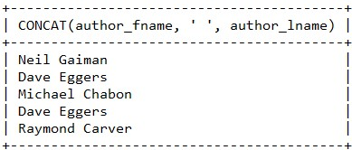
Ekkor egy elég hosszú és csúnya mezőnevet kapunk. Ezt elkerülve használjunk alias-t (AS kulcsszó)!
SELECT CONCAT(author_fname, ' ', author_lname) AS author
FROM books
WHERE pages > 400;
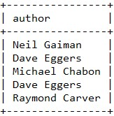
Több mezőt is ki tudunk iratni természetesen úgy, hogy az egyik mezőt konkatenáljuk!
SELECT author_fname AS first, author_lname AS last, CONCAT(author_fname, ' ', author_lname) AS author
FROM books
WHERE pages > 400;
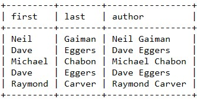
De természetesen a CONCATOT feltételként is tudjuk alkalmazni.
SELECT title
FROM books
WHERE CONCAT(author_fname, ' ', author_lname)='Jhumpa Lahiri';
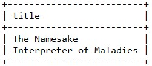
CONCAT_WS - több szöveget egy szöveggé gyúrunk, az elején megadott elválasztó karakter minden mező között megjelenik
Ált.: CONCAT_WS(elv., x, y, z, ...)
SELECT CONCAT_WS(' - ', title, author_fname, author_lname) AS book
FROM books
WHERE pages > 400;
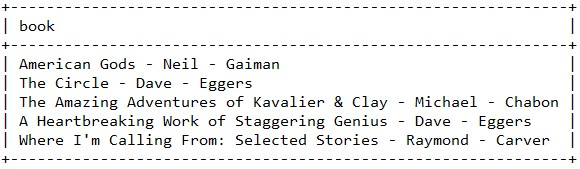
SUBSTRING
A szöveg bizonyos részeit ki tudjuk vágni.
Például: SELECT SUBSTRING('Hello World', 1, 4);
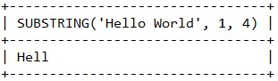
Ált.: SUBSTRING(string, x) - ebben az esetben az X. karaktertől kezdődően az összes karakter benne lesz a vágásban. Az x lehet negatív, ebben az esetben az utolsó x karaktert kapjuk vissza.
SELECT SUBSTRING('Hello World', -3);
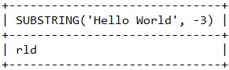
A karakterek számolását 1-től kezdjük!
Hasonlóan a CONCAT-hoz, a SUBSTRINGET is csak SELECT után tudjuk megadni, ha mezőkre hivatkozunk, ugyanúgy kell a FROM tablanev!
SELECT SUBSTRING(title, 1, 10) AS 'short title'
FROM books
WHERE pages > 350;
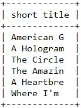
Hasonlóan a CONCAT-hoz, a SUBSTRING-et is bele tudjuk építeni feltételbe.
SELECT title
FROM books
WHERE SUBSTRING(title, 1, 1)='A';
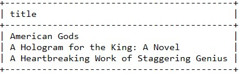
Létezik a SUBSTRING-nek egy shortcut-ja, a SUBSTR, ami ugyanúgy működik, mint a hosszabb változata.
A CONCAT-ot és a SUBSTRING-et tudjuk kombinálni is:
SELECT CONCAT(SUBSTR(title, 1, 10), '...') AS 'short title'
FROM books
WHERE pages > 350;
REPLACE
A szöveg egy részeit kicseréljük.
Ált.: REPLACE(szöveg, a cserélendő szövegrészlet, a helyettesített szövegrészlet)
Ugyanúgy, kell a SELECT, hogy tudjuk alkalmazni. A cserélendő szöveg érzékeny a kis- és nagybetűkre!
Például:
SELECT REPLACE(title, 'a', 4) AS a4
FROM books
WHERE pages > 350;
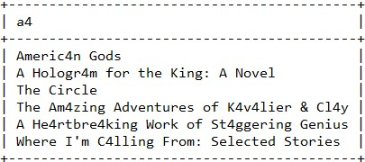
A REPLACE-t is tudjuk kombinálni a CONCAT-tal és a SUBSTRING-gel!
SELECT CONCAT(SUBSTRING(REPLACE(title, 'e', 3),1,10),'...') AS e3
FROM books
WHERE pages > 350;
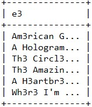
REVERSE
Szövegek megfordítása
Ált.: REPLACE(string)
Szintén a SELECT után tudjuk megadni.
SELECT REVERSE(title) AS eltit
FROM books
WHERE pages > 350;
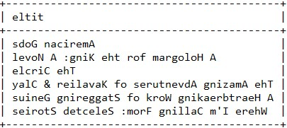
Ugyanúgy tudjuk a többi függvénnyel kombinálni.
SELECT CONCAT(title, ' | ', REVERSE(title)) AS palindrome
FROM books
WHERE stock_quantity > 30 AND stock_quantity < 50;
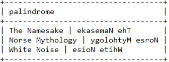
CHAR_LENGTH
Karakterhosszúsága egy stringnek
Ált.: CHAR_LENGTH(string)
Szintén SELECT kulcsszó kell a használatához.
SELECT CHAR_LENGTH(author_lname) AS last_length
FROM books
WHERE pages > 350;
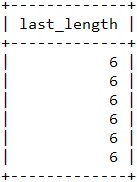
Használhatjuk szintén feltételként.
SELECT title, author_fname, author_lname
FROM books
WHERE CHAR_LENGTH(title) < 15;
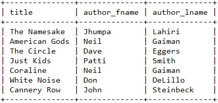
A CHAR_LENGTH-et is össze tudjuk kombinálni a többi string művelettel.
SELECT title, CHAR_LENGTH(CONCAT(author_fname, ' ', author_lname)) AS author_length
FROM books
WHERE pages > 350;
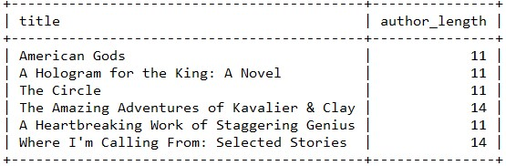
UPPER és LOWER
Megváltoztatja az összes karaktert nagy- vagy kisbetűre.
Például: SELECT UPPER('Hello World') AS HELLO;
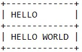
SELECT LOWER('Hello World') AS hello;
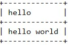
SELECT title, UPPER(CONCAT(author_fname, ' ', author_lname)) AS author_upper
FROM books
WHERE pages > 350;
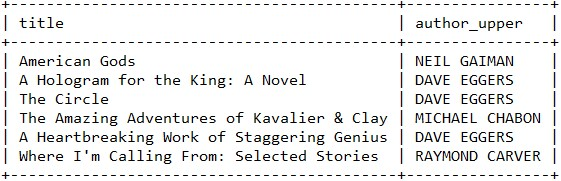
SELECT title, LOWER(CONCAT(author_fname, ' ', author_lname)) AS author_lower
FROM books
WHERE pages > 350;
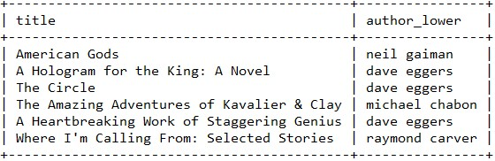
A lekérdezett adatok finomítása
- DISTINCT - duplikált adatok kiszűrése
- ORDER BY - sorbarendezés
- LIMIT - lekérdezés limitálása (és elcsúsztatása)
- LIKE - keresés részszóra vagy bizonyos patternre
DISTINCT
Ha egy adatból több található a táblában, akkor csak egyszer kapjuk vissza.
A SELECT kulcsszóval áll együtt és ugyanúgy történik a lekérdezés, mint "normális" esetben.
SELECT DISTINCT author_lname
FROM books;

Viszont a DISTINCT nem feltétlenül túl specifikus. Nem tudhatjuk, hogy több azonos vezetéknév nem takar-e például két különböző embert. Ennél sokkal specifikusabban kell megadni a szűkítést. Ha több mezőnevet is vissza szeretnénk kapni, akkor a DISTINCT adatonként az összes mezőre elvégzi a megegyező adatok szűrését, így ha például valakiknek azonos a vezetéknevük, de a keresztnevük nem, akkor nem kerülnek ki a lekérdezett adatok közül.
SELECT DISTINCT author_fname, author_lname
FROM books;
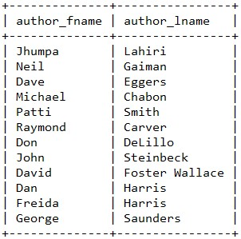
ORDER BY
Az eredmények sorbarendezése.
A sorbarendezés default növekvő sorrendben rendez, de meg tudjuk adni, hogy növekvő vagy csökkenő sorrendben legyenek-e az adataink. Ehhez az ASC és a DESC kulcsszavakra lesz szükségünk, amit a mező neve után kell megadni.
A sorbarendezés működik szövegre és számra egyaránt. Olyan mező alapján is sorba tudunk rendezni, amit nem íratunk ki.
SELECT DISTINCT author_fname, author_lname
FROM books
ORDER BY author_lname;
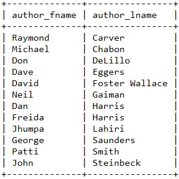
Ha viszont az ORDER BY után számot írunk, nem mezőnevet, akkor aszerint a mező szerint rendezünk, amelyik az adott helyen áll a kiválasztott mezők között. A lenti példán például a 2. mező szerint rendezünk növekvő sorrendben.
SELECT title, author_fname, author_lname
FROM books
WHERE pages > 350
ORDER BY 2;
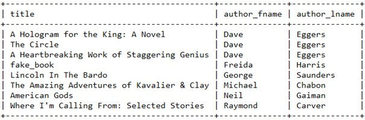
Az ORDER BY után több mező nevét is meg tudjuk adni, ilyenkor mindig a legelső sorbarendezés hajtódik végre, utána a második és így tovább.
SELECT author_fname, author_lname
FROM books
ORDER BY author_lname ASC, author_fname DESC;

(És természetesen ez utóbbi működik a számos módszerrel is!)
LIMIT
A kiírandó rekordok számát tudjuk ezzel korlátozni.
A LIMIT a lekérdezés legvégére kerül. A kulcsszó után egy számot kell írni, amellyel azt adjuk meg, hogy legfeljebb hány rekordot szeretnénk lekérdezni.
SELECT title
FROM books
LIMIT 5;
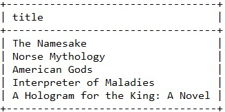
Természetesen kicsit bonyolultabb lekérdezéseknél is tudjuk használni a LIMIT-et.
SELECT CONCAT(author_fname, ' ' , author_lname) AS author, title, released_year AS year
FROM books
WHERE pages > 150
ORDER BY released_year
LIMIT 5;
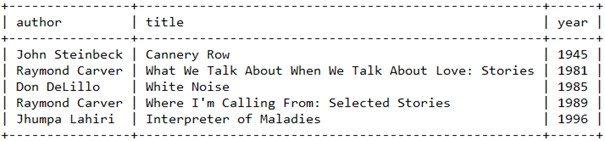
Van egy olyan megadási módja is a LIMIT-nek, hogy két számot írunk utána vesszővel elválasztva: az 1. az az eltolás mértéke (vagyis az első rekord, amit visszakapunk, 0-tól számolva), míg a második a limit lesz. Ha az x. sortól szeretnénk az összes eredményt kiíratni, akkor az első értéknek x-et, a második értéknek pedig egy hatalmas számot kell megadni.
A fenti példa úgy, hogy a LIMIT kulcsszó után 1,5-t adunk meg:
SELECT CONCAT(author_fname, ' ' , author_lname) AS author, title, released_year AS year
FROM books
WHERE pages > 150
ORDER BY released_year
LIMIT 1,5;
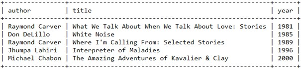
Látható, hogy az 1. rekord, amit visszakapunk az a másik lekérdezésnél a 2. volt.
LIKE
Bizonyos szövegrészletek keresése (például első karakter alapján).
Ált.: SELECT * FROM {tabla} WHERE {mezo} LIKE '%{valami}'; - az elején van egyezés
Ált.: SELECT * FROM {tabla} WHERE {mezo} LIKE '%{valami}%'; - bárhol megtalálható az általunk megadott részszó
Ált.: SELECT * FROM {tabla} WHERE {mezo} LIKE '%{valami}'; - a végén van egyezés
Ált.: SELECT * FROM {tabla} WHERE {mezo} LIKE '%{valami1}%{valami2}%...' - több szövegrészlet között bármilyen karakter állhat, akkor van egyezés, ha ez a pattern illeszkedik valamelyik rekord adott mezőjére
Ált.: SELECT * FROM {tabla} WHERE {mezo} LIKE '____' - az aláhúzás pontosan 1 karaktert jelöl, olyan hosszú rekordokat keresünk az adott mezőben, ami olyan hosszú, ahány aláhúzást adtunk meg
(A % akármennyi karakter, míg az _ csak 1 karakter jelölése!)
Nagyon fontos az, hogy a LIKE kulcsszó a WHERE-rel áll együtt méghozzá úgy, hogy a WHERE és a LIKE közé meg kell adni annak a mezőnek a nevét, ahol szeretnénk szövegrészletre keresni.
1. eset:
SELECT title, author_fname, author_lname
FROM books
WHERE author_fname
LIKE 'da%';
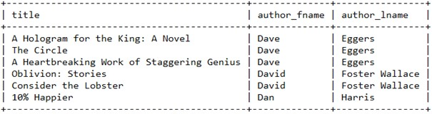
Ahogy itt is látható, az összes olyan rekordot visszakaptuk, ahol az író keresztneve 'da'-val kezdődik.
2. eset:
SELECT title, author_fname, author_lname
FROM books
WHERE author_fname
LIKE '%da%';
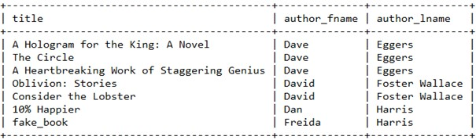
Ahogy itt is látható, az összes olyan rekordot visszakaptuk, ahol az író keresztnevében van 'da' részszó.
3. eset:
SELECT title, author_fname, author_lname
FROM books
WHERE author_fname
LIKE '%da';
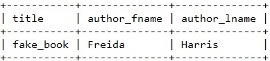
Ahogy itt is látható, az összes olyan rekordot visszakaptuk, ahol az író keresztneve 'da'-val végződik.
4. eset:
SELECT title, author_fname, author_lname
FROM books
WHERE title
LIKE '%the%a%';
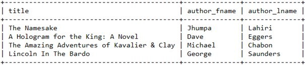
Ennél a példánál visszakaptuk az összes olyan könyvcímet, amiben megtalálható a %the%a% pattern.
SELECT title, author_fname, author_lname
FROM books
WHERE title
LIKE '%the%a%no%';
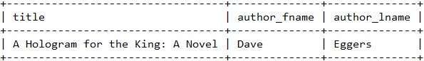
Ennél a példánál visszakaptuk az összes olyan könyvcímet, amiben megtalálható a %the%a%no% pattern.
5. eset:
SELECT title, CONCAT(author_fname, ' ', author_lname) AS author, stock_quantity AS quantity
FROM books
WHERE stock_quantity
LIKE '___'
ORDER BY 3;
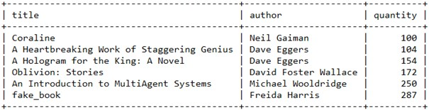
Itt pedig minden olyan rekordot visszakaptunk, ahol a darabszám egy háromjegyű szám (mivel 3 aláhúzás van!)
De mi van abban az esetben ha a könyv címében % vagy _ van? A megoldás egyszerű: ha %-ra vagy _-ra keresünk, akkor az adott jel elé \-t kell tenni.
SELECT title, author_fname, author_lname
FROM books
WHERE title
LIKE '%\%%';
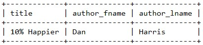
Megkaptuk ezzel az összes könyvet, amiben % van.
Ennél a pontnál a kódok megtalálhatóak a MySQL-ben elmentve.
Összegző (aggregate) függvények és adatok csoportosítása
- COUNT() - megszámlálás
- GROUP BY - csoportosítás
- MIN() - minimum
- MAX() - maximum
- SUM() - összeg
- AVG() - átlag
COUNT
Adatok összeszámolására való.
A COUNT kulcsszót közvetlenül a SELECT kulcsszó után kell megadni, majd zárójelben a megszámlálandó mező vagy mezők nevét kell megadni.
SELECT COUNT(author_fname)
FROM books;
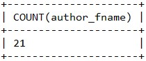
Amennyiben csak az egyedi rekordokat szeretnénk összeszámolni, úgy a COUNT-on belül meg kell adni a DISTINCT kulcsszót, közvetlenül a megszámolandó mezőnév előtt.
SELECT COUNT(DISTINCT author_fname)
FROM books;
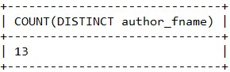
Természetesen lehetőségünk van COUNT-on belül bármelyik string függvényt is alkalmazni, például a CONCAT-ot, ha mondjuk azt szeretnénk, hogy hány író található az adatbázisban.
SELECT COUNT(DISTINCT CONCAT(author_fname, ' ', author_lname)) AS no_of_author
FROM books;
De ugyanez megadható CONCAT nélkül is:
SELECT COUNT(DISTINCT author_fname, author_lname) AS no_of_author
FROM books;
Az előbb látott LIKE-ot is kombinálhatjuk a COUNT-tal, ekkor azt a számot kapjuk meg, hogy hány rekord felel meg az általunk megadott patternnek.
SELECT COUNT(title)
FROM books
WHERE title
LIKE "%the%";
GROUP BY
Megegyező adatok csoportosítása egyetlen sorba.
A GROUP BY kulcsszót közvetlenül a WHERE kulcsszó után kell írni (amennyiben van), a GROUP BY után annak a mezőnek a nevét kell megadni, ami alapján szeretnénk csoportosítani. Általában az(oka)t a mező(ke)t szeretnénk lekérdezni, ami(k) alapján csoportosítunk és ez(ek) mellé valamelyik összegző függvényt is kell alkalmaznunk.
SELECT author_lname, COUNT(*)
FROM books
GROUP BY author_lname;
Amennyiben viszont szeretnénk azt a problémát elkerülni, hogy például valakinek ugyanaz a vezetékneve, de más ember, akkor több mezőt is meg tudunk adni a GROUP BY-nál.
SELECT author_fname, author_lname, COUNT(*)
FROM books
GROUP BY author_fname, author_lname;
Ekkor ugyanazt az eredményt kapjuk, mint az előbb, kiegészülve a keresztnevekkel. Ez így már egy sokkal specifikusabb csoportosítás!
MIN és MAX
Visszaadja a legkisebb/legnagyobb értéket
GROUP BY nélkül úgy adhatjuk meg őket, mint a COUNTOT: SELECT után jön a MIN/MAX és zárójelben annak a mezőnek a neve, ahol a minimumot keressük. Ez a két függvény működik szövegre is, ekkor az ABC-ben a legelőrébb/leghátrébb lévő szöveget kapjuk vissza.
SELECT MIN(released_year)
FROM books;
SELECT MAX(title)
FROM books;
Vannak problémák ezekkel a függvényekkel. Például ha kiíratjuk a legnagyobb oldalszámot és mellé a könyvcímet, akkor nem feltétlenül lesz egyezés.
SELECT MAX(pages), title
FROM books;
Való igaz, hogy a leghosszabb könyv 790 oldalas, de az nem a The Namesake, hanem a Software Engineering.
A probléma egyik lehetséges kiküszöbölése az úgynevezett subquery (allekérdezés) használata. Ez úgy működik, hogy a feltételben megadunk egy SELECT-et és ez a SELECT fog előbb végrehajtódni. Például:
SELECT pages, title
FROM books
WHERE pages = (SELECT MAX(pages) FROM books);
Viszont ennél a nagy probléma az lehet, hogy nagy adatbázisra 2x futtatjuk le a lekérdezést, ami viszonylag időigényes.
SELECT author_fname, author_lname, MIN(released_year)
FROM books
GROUP BY author_fname, author_lname
ORDER BY 2, 1;
Ennél a lekérdezésnél az egyes írók legkorábbi művét kaptuk meg.
SUM
Összegzés.
Hasonlít a többi függvényhez: SELECT után tudjuk megadni és meg kell adni, hogy mely mezőket szeretnénk összegezni. Szövegekre is működik, csak semmi értelme alkalmazni.
SELECT SUM(pages)
FROM books;
SELECT author_fname, author_lname, SUM(pages)
FROM books
GROUP BY author_fname, author_lname
ORDER BY 2, 1;
Ennél a lekérdezésnél pedig egyes írók által írt művek össz oldalszámait kapjuk meg.
AVG
Átlagolás.
SELECT után adjuk meg, mint a társait és szintén meg kell adni, hogy mely mezőket szeretnénk átlagolni.
A számok decimálisak, a tizedesvessző után 4 számjegyet ír ki alapértelmezetten az SQL.
SELECT AVG(pages)
FROM books;
SELECT released_year, AVG(stock_quantity)
FROM books
GROUP BY released_year
ORDER BY 1;
Ezzel megkapjuk az átlagos raktáron lévő darabszámokat az azonos évben kiadott könyveket tekintve.
Összességében: a COUNT-ot leszámítva minden függvényhez egy megfelelő mezőt kell megadni, amin szeretnénk számításokat elvégezni. A GROUP BY-nál meg bizonyos szempontok szerint csoportosítunk.
Adattípusok áttekintése
Újabb adattípusok:
- CHAR - karaktertípus, fix memóriafelhasználással
- DECIMAL(x,y) - tizedes tört x számjeggyel, y tizedesjeggyel
- FLOAT - tizedestört, 7 számjegyig jó
- DOUBLE - tizedestört, 15 számjegyig jó
- DATE - dátum 'YYYY-MM-DD'
- TIME - idő 'HH:MM:SS'
- DATETIME - dátum + idő 'YYYY-MM-DD HH:MM:SS'
- TIMESTAMPS - dátum + idő
- CURDATE() - mai dátum
- CURTIME() - pontos idő
- NOW() - mai dátum + pontos idő
- DAY() - nap
- DAYNAME() - nap neve
- DAYOFWEEK() - hányadik nap a héten az adott nap
- DAYOFYEAR() - hányadik nap az évben az adott nap
- MONTH() - hónap
- MONTHNAME() - hónap neve
- YEAR() - év
- HOUR() - óra
- MINUTE() - perc
- SECOND() - másodperc
- DATE_FORMAT() - dátumok visszaadása formázva
- DATEDIFF() - különbség dátumok között
- DATE_ADD() - dátumok összeadása
CHAR ÉS VARCHAR
Ezek szövegek tárolására alkalmasak, ahol a karakterek hosszának 0 és 255 közötti értéket tudunk megadni. A különbség kettő között az, hogy a CHAR rendelkezik egy fix hosszúsággal. Ez azt jelenti, hogyha mondjuk 5-t adunk meg hosszúságnak, akkor a hosszabb szövegeket levágja, a rövidebb szövegeket pedig szóközökkel egészíti ki. Viszont ha a szöveget le szeretnénk kérdezni, akkor a helykitöltő szóközök eltűnnek. Az előnye: a CHAR-t gyorsabban lehet használni fix hosszúságú szövegekhez. A lényegi különbség a lefoglalt tárhelyekben van: míg a CHAR fix byte-nyi területet foglal el, addig a VARCHAR által felhasznált byte-ok a szöveg méretétől függően változnak (szöveg hossza + 1).
Éppen ezért a nagyobb adatbázisoknál célszerű VARCHAR-t használni.
DECIMAL
Tizedestörtek kiíratására alkalmas adattípus. Amikor ezt adjuk meg a mező típusának, akkor 2 paramétert kell neki megadni: az első paraméter a szám hossza (amiben a tizedesvessző előtti és utáni számok is benne vannak!), a második pedig, hogy hány számjegy áll a tizedestört után. Például a DECIMAL(5,2)-nél a 999.99-et még el tudjuk tárolni. Fontos: első számnak 1 és 65, míg a másodiknak 0 és 30 közöttnek kell lennie és a 2. szám nem lehet nagyobb, mint az első (nyilván).
A tizedesvessző utáni valahány szám akkor is kiírásra kerül, ha nem adjuk meg azokat. Például ha 2. paraméternek 2-t adunk meg, akkor a 7 7.00, míg a 2.1 2.10 formában fog megjelenni.
Ha túl nagy számot adunk meg, például a DECIMAL(5,2)-nél 7696325-t, akkor 999.99-et kapunk vissza, vagyis a lehető legnagyobb számot, ami megfelel az adattípusnak.
Ha a tizedesvessző után több számot adunk meg, mint amennyit definiáltunk, akkor automatikusan kerekít a program. Például DECIMAL(5,2)-nál 2.5762 esetén 2.58-t kapunk vissza.
FLOAT, DOUBLE
Lényegi különbség nincs ekettő és a DECIMAL között, mind a három tizedes törteket tárol. A lényeges különbség a felhasznált memóriában van: a FLOAT és a DOUBLE kevesebb memóriát használ, de ennek ára van, méghozzá az, hogy e kettő adattípus kevésbé precíz.
Ahogy látható is, a FLOAT 7 számjegyet, míg a DOUBLE 15 számjegyet képes precízen tárolni.
Néhány példa: a FLOAT a 8877665544.45-ből 8877670000-t csinál.
Szóval inkább célszerűbb DOUBLE-t használni.
Viszont ha fontos a precizitás, használjunk DECIMALT!
DATE, TIME, DATETIME
DATE - csak dátumot tároló adattípus. Formátuma: 'YYYY-MM-DD'
TIME - csak időt tároló adattípus. Formátuma: 'HH:MM:SS'
DATETIME - dátumot és időt tároló adattípus. Formátuma: 'YYYY-MM-DD HH:MM:SS'
Például:
CURDATE, CURTIME, NOW
A CURDATE a jelenlegi dátumot, a CURTIME a pontos időt, míg a NOW a jelenlegi dátumot adja vissza a pontos idővel.
Ezek függvények, így a kulcsszavak után ki kell tenni a ()-t! Lekérdezni a SELECT-tel tudjuk őket.
Vagy akár be is illeszthetjük a táblába az alábbiak szerint: VALUES ('Most', CURDATE(), CURTIME(), NOW())
TIMESTAMPS
A TIMESTAMP hasonló típusú, mint a DATETIME, de van néhány különbség közöttük.
- A DATETIME adattípus 1000-01-01 00:00:00 és 9999-12-31 23:59:59 között, míg a TIMESTAMP csak 1970-01-01 00:00:01 és 2038-01-19 03:14:07 között képes dátumot tárolni.
- A DATETIME típusú adatok 8, míg a TIMESTAMP típusúak 4 byte-ot foglalnak el.
Érdemes akkor használni a TIMESTAMP-et, ha tudjuk, hogy ezen rangen belül tudunk maradni, illetve azt szeretnénk meghatározni, hogy egy meta-adat mikor keletkezett vagy frissült.
Tudjuk automatikusan is updatelni a megadott időt, ehhez az ON UPDATE CURRENT_TIMESTAMP-re lesz szükségünk. Ekkor minden UPDATE-kor automatikusan felülírásra kerül a dátum a pontos időre.
CURRENT_TIMESTAMP = NOW().
Dátumok formázása és a "dátum matek"
- DAY() - a dátumban szereplő nap (pl 2022-10-11 esetében 11)
- DAYNAME() - az adott nap neve (2022-10-11 esetében kedd)
- DAYOFWEEK() - az adott nap hányadik a héten (2022-10-11 esetében 3)
- DAYOFYEAR() - az adott nap hányadik az évben (2022-10-11 esetében 284)
Ezeket lekérdezhetjük időre is, csak semmi értelme, ugyanis az idő nem tárol semmilyen információt a napra vonatkozólag!
Hónapra és évre vonatkozó függvények:
- MONTH() - a hónap sorszámát adja vissza
- MONTHNAME() - a hónap nevét adja vissza
- YEAR() - az adott évet adja vissza
Időre vonatkozó függvények:
- HOUR() - az órát adja vissza
- MINUTE() - a percet adja vissza
- SECOND() - a másodpercet adja vissza
EZEK MIND MŰKÖDNEK DATETIME-RA IS!
Egyszerűbb megoldás:
DATE_FORMAT(datum, formatum)
pl: DATE_FORMAT('2008-02-23', '%Y %M %D)
DATE_FORMAT(birthdt, 'Was born on a %W')
DATE_FORMAT(birthdt, '%m/%d/%Y at %H:%i')
A teljes lista elérhető itt.
Dátum matek: DATEDIFF és DATE_ADD
DATEDIFF(datum1, datum2), az eredmény: datum1-datum2 napokban
DATE_ADD(datum1, INTERVAL expr unit): datum1 + INT unit
SELECT datum1 + INTERVAL expr unit;
SELECT datum1 - INTERVAL expr unit;
Logikai operátorok
- !=
- NOT LIKE
- >
- >=
- <
- <=
- BETWEEN, NOT BETWEEN
- IN, NOT IN
Not equal
Nem egyenlő.
Jelölése: !=
WHERE-ben lévő feltételt tudjuk vele tagadni
Pl.: WHERE released_year != 2007
Not like
Jelölése: NOT LIKE
Azokat a rekordokat kapjuk vissza, amelyek nem illeszkednek az általunk megadott patternra.
Pl.: WHERE title NOT LIKE "%the%"
Greater than
Nagyobb mint
Jelölése: >
Greater Than or Equal To
Nagyobb vagy egyenlő
Jelölése: >=
Azokat a rekordokat kapjuk vissza, amik vagy nagyobbak vagy nagyobb vagy egyenlőek, mint az általunk megadott érték (WHERE-ben).
Van értelme annak is, ha SELECT után írunk egy összehasonlítást, az eredmény 1, ha igaz és 0, ha hamis (például: 99 > 1, eredmény: 1).
Nem érzékeny a kis-/nagybetűkre!
Pl.: WHERE released_year >= 2001
Lesser Than
Kisebb mint
Jelölése: <
Lesser Than or Equal To
Kisebb vagy egyenlő
Jelölése: <=
Azokat a rekordokat kapjuk vissza, amik vagy kisebbek vagy kisebb vagy egyenlőek, mint az általunk megadott érték (WHERE-ben).
Ugyanúgy van értelme összehasonlítást írni a SELECT után, mint a másik esetben.
Pl.: Stock_quantity <= 100
And
Logikai és
Jelölése: AND vagy &&
Több feltételt tudunk vele összekapcsolni, amelynek az a lényege, hogy csak azokat a rekordokat kapjuk vissza, amelyre az ÖSSZES AND-del összekapcsolt feltétel teljesül.
Pl.: WHERE released_year > 2000 AND stock_quantity < 50
Or
Logikai vagy.
Jelölése: OR vagy ||
Több feltételt tudunk vele összekapcsolni, amelynek az a lényege, hogy az összes olyan rekordot visszakapjuk, amelyre teljesül LEGALÁBB EGY feltétel, amiket OR-ral kapcsolunk össze.
Pl.: WHERE released_year > 2000 OR stock_quantity < 50
A logikai éssel és vaggyal komplexebb feltételeket is létre tudunk hozni, csak figyelni kell a helyes zárójelezésre!
1. eset: WHERE (title LIKE '%the%' AND released_year < 2000) OR stock_quantity >= 100;
(1. feltétel: a könyv címében van 'the' és 2000 előtti
2. feltétel: raktáron legalább 100 van a könyvből
Ebből 1-nek kell teljesülnie - eredmény: 7 db könyv)
2. eset: WHERE title LIKE '%the%' AND (released_year < 2000 OR stock_quantity >= 100)
(Ugyanannak tűnhet, mint az előző, de máshogy van zárójelezve. Itt:
1. feltétel: a könyv címében van 'the'
2. feltétel: a könyv 2000 előtti vagy van belőle legalább 100 raktáron
Itt mindkettőnek teljesülnie kell - eredmény: 2 db könyv)
Between
Két érték között.
A BETWEEN kulcsszó után 2 értéket kell megadni AND kulcsszóval elválasztva. Ekkor az összes olyan rekordot visszakapjuk, ami e két érték között található.
Pl.: WHERE pages BETWEEN 200 AND 500
A párja a NOT BETWEEN, az összes olyan rekordot visszaadja, ami nincs két érték között. Hasonlóan a kulcsszó után két értéket kell megadni, AND kulcsszóval összekötve.
Pl.: WHERE pages NOT BETWEEN 200 AND 500
Ha dátumokra vagy időre szeretnénk BETWEEN-t alkalmazni, akkor célszerű a CAST() függvény segítségével átalakítani a dátumot DATE, az időt TIME típusra, hogy pontosabb eredményt kapjuk. A CAST() függvény működése: CAST(dátum/idő AS DATE/TIME/DATETIME);
Pl.: WHERE birthdt BETWEEN CAST('1980-01-01' AS DATETIME) AND CAST('2022-10-12' AS DATETIME);
IN, NOT IN
Az IN és a NOT IN kulcsszavakhoz egy halmaz tartozik, melynek elemeit kerek zárójelek között kell megadni. Az IN kulcsszó esetében azokat a rekordokat kapjuk vissza, ahol egy adott mező értéke benne van az általunk megadott halmazban. A NOT IN-nel természetesen ennek a komplementerét kapjuk vissza.
Pl.: WHERE pages IN (208, 790, 400);
Pl.: WHERE released_year NOT IN (1997, 2001, 2007);
MOD (%) - modulo, osztási maradék vizsgálata (MOD 2 = 0 -> páros valami)
SELECT title, released_year MOD 2
FROM books;
DIV (/) - egészosztás
SELECT title, released_year DIV 2
FROM books;
Elágazások
Az elágazást a SELECT-en belül alkalmazhatjuk és ideiglenes új oszlopot vagy oszlopokat tudunk vele létrehozni. Az elágazás szintaxisa:
CASE - elágazás kezdete
WHEN - a feltételünket tudjuk megadni
THEN - ha teljesül a feltétel, akkor mit kapjunk vissza
ELSE - ellenkező esetben mit kapunk vissza
END - milyen nevet kapjon ez az ideiglenes oszlop
Működése: mindig az első feltételt nézi meg, ha nem teljesül, akkor a másodikat nézi meg és így tovább. Amennyiben egyik feltétel sem teljesül, úgy az ELSE ágon lévő értéket fogja felhasználni.
Megszorítások (Constraintek) és táblák módosítása
UNIQUE
A UNIQUE kulcsszóval azt tudjuk megadni, hogy minden rekordnak az adott mezőhöz tartozó értéke különbözik. Ha valamelyik mezőben duplikált adat található, akkor errort kapunk!
Ebben az esetben a telefonszám minden rekordnál különböző kell, hogy legyen!
CHECK
A CHECK megadásával azt tudjuk meghatározni, hogy bizonyos mezőbe milyen adatok kerülhetnek. Amennyiben a feltétel nem teljesül, úgy hibaüzenetet kapunk és az adott rekord nem kerül be a táblába.
Ennél a példánál például, ha kornak 18-at vagy annál kevesebbet adunk meg, hibát kapunk!
Ennél a példánál pedig azt ellenőriztetjük le, hogy az általunk megadott szó palindrom-e.
Megszorítások elnevezése
Megszorításokat az alábbiak szerint tudunk megnevezni: a tábla létrehozásakor az utolsó sor(ok)ban a CONSTRAINT kulccsszó után el kell nevezni a megszorításunkat és meg kell adni magát a megszorítást. Az előző példánál maradva:
A megszorítás elnevezésére azért van szükség, hogy a hibaüzenetnél pontosan lássuk, hogy mi a probléma.
Megszorítások több mezőre
Ha több mezőre teszünk megszorítást, akkor minden mezőre teljesülnie kell egy feltételnek.
Ebben a példában a név-cím párosnak egyedinek kell lennie minden sorban. Pontosítva: ugyanaz a név, illetve ugyanaz a cím szepelhet többször a táblában, viszont ugyanaz a név-cím kombináció nem!
Ebben a példában pedig két mező értékét hasonlítjuk össze egymással.
Táblák módosítása
Táblákat az ALTER TABLE kulcsszó segítségével tudunk módosítani. Többféle módosítás lehetséges. Például: Oszlop hozzáadása, illetve elhagyása, átnevezés, oszlopok módosítása illetve megszorítások kötése.
Oszlopok hozzáadása
Oszlopokat az ADD COLUMN kulccszó után tudunk megadni. A szintaxis megegyezik azzal, mintha a tábla létrehozásakor adnánk meg egy mezőt.
Szintaxis:
ALTER TABLE {tabla}
ADD COLUMN* {oszlop} {opciok};
* - opcionális
Példa:
ALTER TABLE customers
ADD COLUMN employee_count INT NOT NULL DEFAULT 1;
Oszlopok elhagyása
Oszlopokat a DROP COLUMN kulcsszó után tudunk elhagyni. A kulcsszó után csak az elhagyni kívánt oszlop vagy oszlopok nevét kell megadni.
Szintaxis:
ALTER TABLE {tabla}
DROP COLUMN* {oszlop}
* - opcionális
Példa:
ALTER TABLE customers
DROP COLUMN employee_count;
Táblák átnevezése
Táblákat kétféleképpen lehet átnevezni:
1. ALTER TABLE kulcsszó nélkül
Szintaxis: RENAME TABLE ... TO ...
Példa: RENAME TABLE companies TO suppliers; - ekkor a companies nevű táblát átnevezzük suppliersre.
2. ALTER TABLE kulcsszóval
Szintaxis: ALTER TABLE ... RENAME TO ...
Példa:
ALTER TABLE companies
RENAME TO suppliers;
Mezők átnevezése
Mezőket az ALTER TABLE kulcsszó után megadott RENAME COLUMN ... TO ... kulcsszóval tudjuk átnevezni.
Szintaxis:
ALTER TABLE {tabla}
RENAME COLUMN {oszlop1} TO {oszlop2}
(ahol oszlop1 a régi, az oszlop2 az új név)
Például:
ALTER TABLE suppliers
RENAME COLUMN name TO biz_name;
Oszlopok módosítása
Oszlopokat a MODIFY kulccszó után tudunk módosítani. Ezzel az adott oszlopnak a típusát tudjuk megváltoztatni.
Szintaxis:
ALTER TABLE {table}
MODIFY {oszlop} {tipus} {opciok}
Például:
ALTER TABLE suppliers
MODIFY biz_name VARCHAR(100);
ALTER TABLE suppliers
MODIFY biz_name VARCHAR(100) NOT NULL DEFAULT 'unknown';
A CHANGE kulcsszóval egyszerre tudjuk megváltoztatni az oszlop nevét ÉS típusát. Ezt ritkábban használjuk.
Szintaxis:
ALTER TABLE {tabla}
CHANGE {oszlop1} {oszlop2} {opciok}
(ahol oszlop1 a régi, az oszlop2 az új név)
Példa:
ALTER TABLE suppliers
CHANGE business biz_name VARCHAR(50);
Ez utóbbi példában a 'business' mezőt átneveztük 'biz_name'-re ÉS a típusát megváltoztattuk VARCHAR(50)-re.
Megszorítások hozzáadása és elvétele
Kezdjük előbb a hozzáadással. Megszorítást hozzáadni a táblához az ADD CONSTRAINT-tel tudunk. Ennek szintaxisa így néz ki:
ALTER TABLE {tabla}
ADD CONSTRAINT* {nev}* {megszoritas}
* - opcionális
Példa:
ALTER TABLE houses
ADD CONSTRAINT positive_pprice CHECK (purchase_price > 0);
Megszorítást a DROP CONSTRAINT-tel tudunk elhagyni. Míg a megszorítás hozzáadásánál opcionálisan lehetett megadni nevet, az elhagyásnál kötelező lesz megadni a megszorítás nevét.
Kapcsolatok
Kapcsolatok
Háromféle különböző kapcsolat van:
- "One to one" kapcsolat
- "One to many" kapcsolat - ez a leggyakoribb
- "Many to many" kapcsolat
2.-ra jó példa az, hogyha vesszük a Könyvek és az Értékelések táblákat. Minden könyvhöz több értékelés tartozik, de minden értékelés csak 1 könyvhöz tartozik.
3.-ra jó példa az, hogyha vesszük a Könyvek és a Szerzők táblákat. Vannak olyan könyvek, amikhez több szerző tartozik és vannak olyan szerzők, akik több könyvet is írtak.
One-to-many
Vegyünk egy klasszikus példát: van egy Vásárlók és egy Rendelések táblánk. Minden vásárló többször is tud rendelni, de minden rendelés csak 1 vásárlóhoz tartozhat. Alapesetben meg tudnánk azt csinálni, hogy az egészhez egy táblát használunk, de több probléma is felmerül: az egyik ilyen probléma az, hogy rengeteg duplikált érték lenne, ha például valaki többször is vásárolt, viszont ha valaki csak beregisztrált, de nem vásárolt, akkor a vásárlás mezőben NULL érték keletkezne.
Ezt a problémát az alábbiak szerint lehet kiküszöbölni: egy tábla helyett használjunk kettőt: az első tábla tartalmazza a vásárló id-ját, a nevét és az email címét, míg a második tábla tartalmazza a rendelés azonosítóját, a vásárlás idejét, a költséget és a vásárló azonosítóját. Ebben az esetben a két táblát a vásárló id-ja segítségével össze tudjuk kapcsolni, de az adatokat mégis külön táblákban tároljuk, ami az átláthatóságot segíti elő.
FOREIGN KEY
Egy olyan kulcs, amely egy másik táblában található PRIMARY KEY-re utal
Az előző példánál a Rendelések táblában a vásárló id-ja egy foreign key, mert a vásárlók táblában a vásárló id-ja egy primary key.
A foreign key segít megtartani a kapcsolatot több tábla között.
Szintaktikája: táblázat készítésekor utolsó sorban: FOREIGN KEY(mező) REFERENCES tábla(mező)
Példa: FOREIGN KEY(student_id) REFERENCES students(id)
Foreign key-es táblák esetén a törlés fordított sorrendben történik, mint a létrehozás, mivel ahol van foreign key, ott nem törölhetjük ki azt a táblát, amivel kapcsolatban áll!
JOIN-ok, 1:n kapcsolat
1:n kapcsolat
A és B tábla között 1:n kapcsolat van, ha az A tábla bármelyik kulcsát a B tábla több rekordjával is tudjuk matchelni, viszont a B tábla bármelyik kulcsa legfeljebb egy darab A táblabeli rekorddal tudjuk párosítani.
Cross Join
Cross Join - Az A tábla összes rekordját összekötjük a B tábla összes rekordjával, így egy a*b rekordból álló táblát kapunk, ahol 'a' az A, valamint a 'b' a B táblában található rekordok száma.
SELECT * FROM tablaA, tablaB;
LEFT JOIN
Amennyiben az A tábla kulcsa közül valamelyik szerepel a B tábla kulcsai között, úgy a B tábla adott rekordját hozzájoinoljuk a táblához.
Az A tábla összes rekordja mindenképp bekerül a joinolt táblába, míg a B tábla azon rekordjait, amivel nem tudtunk matchelni, elhagyjuk. Lehet benne Null, amit az IFNULL() függvénnyel tudunk "feloldani".
Pl.:
A tábla kulcsai - 1, 2, 3, 4, 5, 6, 7, 8, 9, 10
B tábla kulcsai - 2, 4, 6, 8, 10, 12, 14, 15
Joinolt táblában: 1, 2, 3, 4, 5, 6, 7, 8, 9, 10
Null érték tartozhat hozzá: 1, 3, 5, 7, 9
Szintaxis:
SELECT {mezok}
FROM tablaA
LEFT JOIN tablaB
ON tablaA.key = tablaB.key
RIGHT JOIN
Amennyiben a B tábla kulcsa közül valamelyik szerepel az A tábla kulcsai között, úgy az A tábla adott rekordját hozzájoinoljuk a táblához.
A B tábla összes rekordja mindenképp bekerül a joinolt táblába, míg az A tábla azon rekordjait, amivel nem tudtunk matchelni, elhagyjuk. Lehet benne Null, amit az IFNULL() függvénnyel tudunk "feloldani".
Pl.:
A tábla kulcsai - 1, 2, 3, 4, 5, 6, 7, 8, 9, 10
B tábla kulcsai - 2, 4, 6, 8, 10, 12, 14, 15
Joinolt táblában: 2, 4, 6, 8, 10, 12, 14, 15
Null érték tartozhat hozzá: 12, 14, 15
Szintaxis:
SELECT {mezok}
FROM tablaA
RIGHT JOIN tablaB
ON tablaA.key = tablaB.key
INNER JOIN
Az A és a B tábla azon rekordjai szerepelnek az összekapcsolt táblában, amelynek kulcsai az A és a B táblában is szerepelnek. Ez az egyetlen join, ahol nem lesz null érték (hacsak nem adtunk meg az egyik táblában null értéket).
Pl.:
A tábla kulcsai - 1, 2, 3, 4, 5, 6, 7, 8, 9, 10
B tábla kulcsai - 2, 4, 6, 8, 10, 12, 14, 15
Joinolt táblában: 2, 4, 6, 8, 10
Null érték tartozhat hozzá: -
Szintaxis:
SELECT {mezok}
FROM tablaA
INNER JOIN tablaB
ON tablaA.key = tablaB.key
Implicit inner join - Cross join feltétellel
SELECT {mezok}
FROM tablaA, tablaB
WHERE tablaA.key = tablaB.key;
Explicit inner join - az INNER JOIN helyett JOIN van
SELECT {mezok}
FROM tablaA
JOIN tablaB
ON tablaA.key = tablaB.key;
OUTER JOIN
Az A és a B tábla összes rekordjai szerepelnek az összekapcsolt táblában, amelynek kulcsai az A vagy a B táblában szerepelnek. Azoknál a rekordoknál, amelyek eltérnek, null érték(ek) keletkeznek.
Pl.:
A tábla kulcsai - 1, 2, 3, 4, 5, 6, 7, 8, 9, 10
B tábla kulcsai - 2, 4, 6, 8, 10, 12, 14, 15
Joinolt táblában: 1, 2, 3, 4, 5, 6, 7, 8, 9, 10, 12, 14, 15
Null érték tartozhat hozzá: 1, 3, 5, 7, 9, 12, 14, 15
Szintaxis:
SELECT {mezok}
FROM tablaA
FULL OUTER JOIN tablaB
ON tablaA.key = tablaB.key
Több összejoinolt tábla esetén kétféleképp hivatkozhatunk mezőre:
- Ha a mező neve egyedi, akkor simán a mező nevét adjuk meg
- Ha az adott mező neve többször is előfordul, akkor a táblával tudunk hivatkozni a megfelelő mezőre: tabla.mezo. Pl.: konyveim.id
ON DELETE CASCADE - Ezt a FOREIGN KEY-nél tudjuk megadni és a célja az, hogyha egy rekordot törlünk a szülő táblában, akkor a gyerek táblában az összes hozzá tartozó rekordot töröljük, ugyanis azokra a rekordokra így már nem lesz szükségünk.
n:n kapcsolat
A és B tábla között n:n kapcsolat van, ha az A tábla bármelyik kulcsát a B tábla több rekordjával is matchelhetjük, illetve a B tábla bármelyik kulcsát több A táblabeli rekorddal tudjuk párosítani. Az A és B tábla között ilyenkor egy kötőtábla található.
Táblák létrehozása (views)
Virtuális táblák létrehozása
A CREATE VIEW {tabla} AS {lekerdezes} utasítással el tudjuk menteni az általunk megadott lekérdezés után kapott táblát. Ennek célja az, hogy bizonyos esetekben nem kell mégegyszer a lekérdezést megírni, hanem, mivel az elmentett tábla is normális táblaként funkcionál, könnyen hozzá tudunk férni az adott táblához és ugyanúgy tudunk lekérdezéseket is írni vele.
Pl.: CREATE VIEW full_reviews AS
SELECT title, released_year, genre, rating, first_name, last_name FROM reviews
JOIN series ON series.id = reviews.series_id
JOIN reviewers ON reviewers.id = reviews.reviewer_id;
Ezután a full_reviews virtuális táblaként fog viselkedni.
Ahhoz, hogy egy ilyen táblát frissíteni tudjunk, számos feltételt figyelembe kell vennünk, amikor létrehozunk egy nézetet. A teljes lista megtalálható itt.
Ha valamelyik feltétel teljesül, amikor létrehozzuk a virtuális táblát, akkor azt már nem tudjuk módosítani, mert hibaüzenetet kapunk.
Ha esetleg módosítani szeretnénk a táblán, például rossz sorrendben rendeztük, akkor használjuk a CREATE OR REPLACE VIEW {tabla} As {lekerdezes} utasítást (vagy az ALTER VIEW {tabla} AS {lekerdezes}-t)! Ekkor, ha létezik az adott néven található virtuális tábla, akkor lecserélődik.
HAVING
A HAVING segítségével a csoportosított adatainkat tudjuk szűrni. Ha például olyan lekérdezést írunk, hogy
SELECT released_year, SUM(pages)
FROM books
GROUP BY released_year
HAVING SUM(pages) > 500;
akkor csak azokat a csoportokat fogjuk visszakapni, ahol az összoldalszám legalább 500. A HAVING mindig a GROUP BY után áll!
WITH ROLLUP
A WITH ROLLUP kulcsszó a GROUP BY-jal áll együtt és ennek segítségével a lekérdezés során kapott táblázat utolsó sorában megjelenik egy összegző sor.
Például, ha értékeléseket címek szerint csoportosítunk és ezeket összeszámoljuk a COUNT() függvény segítségével, akkor a WITH ROLLUP megadásával a lekérdezés során kapunk egy új sort, ahol meglátjuk, hogy összesen hány értékelésünk van.
Vagy szintén, ha az értékeléseket műfajok szerint csoportosítunk és az egyes műfajok értékeléseit átlagoljuk az AVG() függvény segítségével, akkor az utolsó sorban az összes értékelés átlagát kapjuk meg a WITH ROLLUP megadásával.
Pl.:
Működik a WITH ROLLUP akkor is, amikor több mező szerint csoportosítunk. Ha például sorozatokat megjelenési év, valamint műfaj szerint csoportosítjuk (és kiváncsiak vagyunk az adott évbeli és műfajbeli sorozatok értékelésének átlagára), akkor megkapjuk a megjelenési év-műfaj páros értékelésének az átlagát, valamint egy összegző sort, hogy az egyes évbeli sorozatoknak milyen volt az átlagos értékelése (és természetesen a táblázat végén ugyanúgy találunk teljes táblára vonatkozó összesítést).
Különböző módok (modes)
Jelenleg használt mód:
- SELECT @@GLOBAL.sql_mode; -- globális
- SELECT @@SESSION.sql_mode; -- session (újraindításkor resetelődik a globalra)
Módok megadása:
- SET GLOBAL sql_mode = 'modes';
- SET SESSION sql_mode = 'modes';
Ha valamelyik módot el szeretnénk hagyni, akkor előbb kérdezzük le az aktuálisan használt módokat és adjuk meg az sql_mode-ot anélkül a mód nélkül!
Legfontosabb mód: STRICT_TRANS_TABLES, amelynek bekapcsolása szükséges ahhoz, hogy ne tudjunk rossz típusosztályú adatot megadni (például stringet abba a mezőbe, ahová az SQL intet vár). Ha kikapcsoljuk, akkor tetszőleges típusú adatokat tudunk megadni bármely mezőhöz, bár ilyen esetekben figyelmeztetést kapunk. Ez utóbbi esetben természetesen nem kerül be ilyen formában az általunk megadott adat: ha például int helyett stringet adunk meg, akkor 0 fog bekerülni a táblába.
Egyéb módok:
1. ONLY_FULL_GROUP_BY - hibát kapunk, ha olyan oszlopot szeretnénk lekérdezni, ami vagy nem összevonó függvény vagy nem aszerint csoportosítunk
Például:
SELECT title, rating FROM series
JOIN reviews ON reviews.series_id = series.id
GROUP BY title;
Ebben az esetben hibát kapunk, ugyanis a rating nem összevonó függvény (az AVG(rating) már az), valamint a rating szerint nem csoportosítottunk.
2. NO_ZERO_IN_DATE
- ha ki van kapcsolva, akkor az évhez, a hónaphoz és/vagy a naphoz gond nélkül írhatunk 0-t
- ha be van kapcsolva, akkor az évhez, a hónaphoz és/vagy a naphoz nullát írunk, akkor figyelmeztetést kapunk és a '0000-00-00' dátumot kapjuk vissza
- ha viszont be van kapcsolva ez a mód és be van kapcsolva egy strict mód (pl. STRICT_TRANS_TABLES), akkor hibaüzenetet kapunk
Ablakfüggvények
Az ablakfüggvények segítségével összesítő (aggregate) függvények eredményeit tudjuk megjeleníteni a lekérdezésünk összes soránál. Hasonlít ahhoz, amit korábban láttunk a GROUP BY-nál, de az újdonság az, hogy a lekérdezés minden egyes sorához hozzá tudjuk rendelni az összesítő függvény eredményét (korábban ehhez több lekérdezésre volt szükség).
Vegyük például a könyveket és meg szeretnénk mondani azt, hogy összesen hány oldalnyi könyv tartozik egy adott műfajhoz. Ha ezt GROUP BY-jal valósítjuk meg, akkor csak a lekérdezés végén megkapjuk a műfajt és a hozzá tartozó össz oldalszámot. Viszont ha ablakfüggvényt kapunk, akkor le tudjuk kérdezni az összes könyvet az adatbázisban és ebben az esetben egy új mezőben megkapjuk azt, hogy mennyi az össz oldalszáma az adott műfajnak.
OVER()
Az OVER() függvény meghívásával tudjuk megvalósítani azt, hogy minden egyes sornál megjelenjen az összesítő függvény által számolt érték. Ha a zárójelek közé nem írunk semmit, akkor minden sornál ugyanaz az érték jelenik meg.
PARTITION BY
AZ OVER() függvényt kell hozzá meghívni és a zárójel pár közé kell írni ezt a kulcsszót. A szerepe hasonlít a GROUP BY-éhoz, különböző sorokat tudunk csoportosítani az adott mezőben található értékeik szerint.
ORDER BY
Az OVER() függvényt kell hozzá meghívni és a zárójel pár közé kell írni ezt a kulcsszót. A működése nem hasonlít a korábban látott ORDER BY-éhoz.
A működését könnyebb egy példán érzékeltetni:
Vegyük a könyveket. Ha azt adjuk meg, hogy SUM(oldalszam) OVER(ORDER BY id) AS ossz_oldalszam, akkor a következő történik:
0. az ossz_oldalszam 0-ról indul
1. az ossz_oldalszamhoz hozzáadjuk az 1. könyv oldalszámát és az aktuális össz oldalszám jelenik meg az 1. könyvhöz tartozó sorban
2. ehhez az ossz_oldalszamhoz hozzáadjuk a 2. könyv oldalszámát és az aktuális össz oldalszám (azaz az 1. és a 2. könyv oldalszámának az összege) jelenik meg a 2. könyvhöz tartozó sorban
és így tovább...
Tehát ha az ORDER BY-t alkalmazzuk, akkor lépésről-lépésre alkalmazzuk az összesítő függvényt és az összesítő függvény alkalmazásának sorrendjét határozzuk meg vele.
Példa:
SELECT id, cim, oldalszam, SUM(oldalszam) OVER(ORDER BY id) AS sum_pages_total
FROM konyveim;
RANK()
A RANK() egy tényleges ablakfüggvény, amelynek segítségével rangsorolni tudjuk az adatainkat. Az OVER()-ben meg kell adni azt, hogy mi szerint szeretnénk rangsorolni. Fontos, hogy számít az, hogyha az adott értékek egyenlőek, ilyenkor ugyanolyan sorszámmal látja el az azonos értékkel rendelkező sorokat, illetve ha például 3 darab 40. helyezett van, akkor az utánuk következő a 43. helyezett lesz.
Példa:
SELECT id, cim, oldalszam, RANK() OVER(ORDER BY oldalszam DESC) AS ranking
FROM konyveim;
ROW_NUMBER()
A sorokat sorszámozza, nem törődik azzal, ha több adat is megegyezik egymással.
DENSE_RANK()
Hasonlít a RANK()-hez, annyi a különbség, hogyha például 3 darab 40. helyezett van egy adott érték szerint az táblában, akkor a következő nem 43., hanem 41. helyezett lesz, tehát folyamatosan sorszámoz az egyenlőséget figyelembe véve.
NTILE(N)
Az adatokat N részre osztjuk bizonyos értékek szerint és azt kapjuk vissza minden sornál, hogy melyik részhez tartozik az adott adat az adott érték szerint.
Például, ha N=4 és az oldalszámokat szeretnénk négyfelé osztani, akkor megkapjuk, hogy az adott könyv a hossza alapján melyik negyedben található, amellyel össze tudjuk hasonlítani, hogy egyes könyvek milyen hosszúak az egészhez képest.
Példa:
SELECT id, cim, oldalszam, NTILE(4) OVER(ORDER BY oldalszam) AS negyedek
FROM konyveim
ORDER BY id;
Vagy ha például N=100, akkor meg lehet mondani körülbelülre, hogy a könyvek hány százaléka hosszabb, mint az adott könyv.
Példa:
SELECT id, cim, oldalszam, NTILE(100) OVER(ORDER BY oldalszam DESC) AS százalék
FROM konyveim
ORDER BY id;
FIRST_VALUE(), NTH_VALUE()
Első és valahányadik érték
LAG()
Összehasonlítás az előző sor értékével.
LEAD()
Összehasonlítás a következő sor értékével.